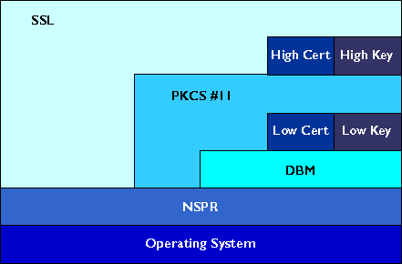

|
|
Introduction to Network Security Services
Newsgroup: netscape.public.mozilla.crypto
Writer: Sean Cotter
Yell at the manager: Bob Lord
Network Security Services (NSS) is a set of libraries designed to support cross-platform development of communications applications. Applications built with the NSS libraries support the Secure Sockets Layer (SSL) protocol for authentication, tamper detection, and encryption and the PKCS #11 protocol for cryptographic token interfaces.
Overview of NSS Libraries
NSS Documentation Set
What You Should Already Know
Where to Find More Information
Network Security Services consists of interlocking APIs in several libraries. Figure 1 provides a high-level view of the relationships among these core libraries:
Figure 1 Relationships among core NSS libraries

In addition to the core libraries shown in Figure 1, NSS makes use of the following libraries for additional operations:
The NSS documentation set documents the core APIs provided by these libraries that allow developers to support SSL in their applications.
The documentation set for Network Security Services currently consists of the following documents:
As mentioned above, NSS is built on top of NSPR. The API documentation for NSPR is available at NSPR Reference.
The NSS documentation assumes that you are familiar with the following programming topics:
For information about PKI and SSL that you should understand before using this documentation, see the following:
Introduction to Public-Key Cryptography
Introduction to SSL
|